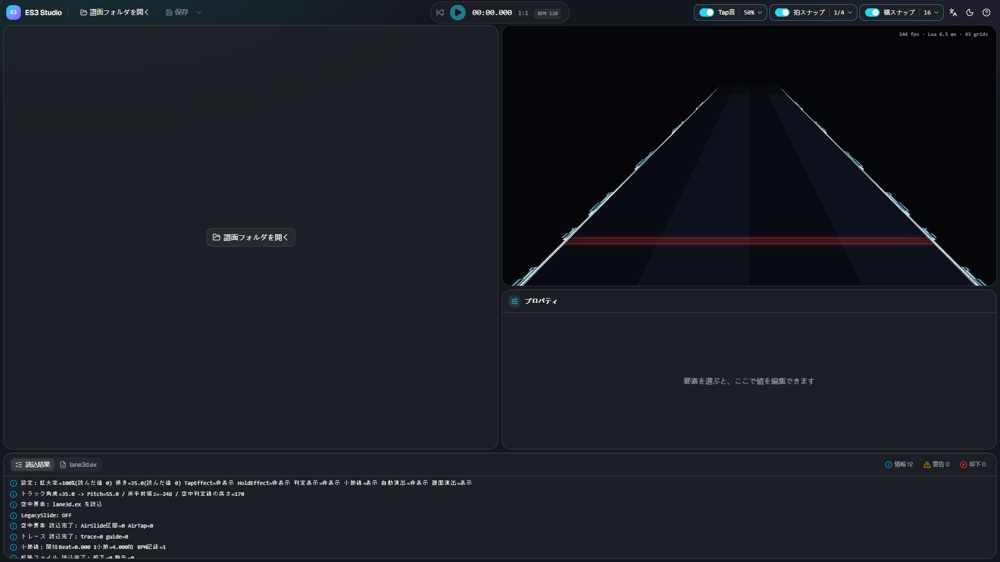
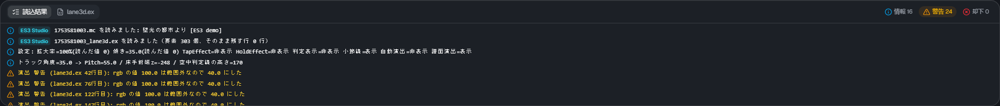
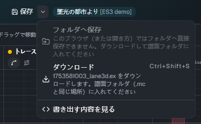
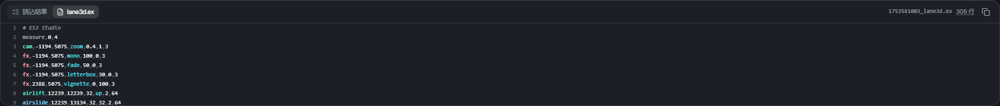

開く・保存
譜面フォルダを開く

「譜面フォルダを開く」 を押し、譜面（.mc）がある曲のフォルダを選びます。ファイルではなくフォルダを選びます。
- フォルダに譜面が1つなら、そのまま開きます
- 複数あるときは、どの譜面を編集するかを選ぶ画面が出ます。Slide でない譜面・Free Mode が OFF の譜面・拡張ファイルがある譜面には印が付きます
- 保存していない変更があるときは、開く前に確認が出ます
Chrome・Edge では、ブラウザから「このサイトにファイルの閲覧を許可しますか」と聞かれます。許可すると開けます。
読み込むファイル
譜面フォルダの中から、次のファイルを読みます。
| ファイル | 使い道 |
|---|---|
<譜面名>.mc |
床のノーツ（参考に表示。編集はしません）・BPM・譜面の scroll / jump・音源と背景画像の名前 |
<譜面名>_lane3d.ex |
編集する拡張ファイル。無ければ新しく作ります |
<譜面名>_chart_3d.ex |
古い名前の拡張ファイル。_lane3d.ex が無いときだけ読みます |
<譜面名>_lane3d.src |
Composer の ES3 プラグインのファイル。どちらの .ex も無いときだけ読みます |
| 音源 | 再生に使います。無ければ音なしで再生します |
| 背景画像 | プレビューの背景に敷きます（少し暗くします）。無ければ背景なしです |
読込結果

下のパネルの 「読込結果」 に、読み込みの結果が出ます。
- 情報: 読んだファイルと要素の数など
- 警告: 動きますが、確かめたほうがよいこと
- 却下: ゲームでも無視される行。ES3 Studio でも要素にはせず、行はそのまま残して保存します
[T3D] で始まる行は、スキンのスクリプトが出したログです（ゲームのログと同じ内容です）。
保存

「保存」（Ctrl+S）を押すと、<譜面名>_lane3d.ex を保存します。保存していない変更があると、ボタンに点が付きます。
- Chrome・Edge: 開いた譜面フォルダへ直接書き込みます。初めて保存するとき、ブラウザから書き込みの許可を求められます
- ほかのブラウザ（またはフォルダへ書き込めないとき）: ダウンロードになります。ダウンロードしたファイルを譜面フォルダ（
.mcと同じ場所）に入れてください
「保存」の横の ▾ から、保存のしかたを選べます。
| メニュー | 内容 |
|---|---|
| フォルダへ保存 | 譜面フォルダへ直接書き込みます（Chrome・Edge でフォルダを開いたときだけ） |
| ダウンロード（Ctrl+Shift+S） | いつでもダウンロードで保存できます |
| 書き出す内容を見る | 下のパネルの「lane3d.ex」を開きます |
ES3 Studio で書いたのではない lane3d.ex（手で書いたものなど）を初めて上書きするときは、確認が出ます。
上書きすると、要素は時刻順に並び直し、コメントなど要素にしない行は先頭にまとまります（行の中身は残ります）。
書き出す内容

下のパネルの 「lane3d.ex」 に、保存すると書かれる内容が出ます。
- 行をクリックすると、その要素を選びます（Shift で足す）
- 行番号は、ゲームのログの「◯行目」と同じです。ゲームで警告が出たら、ここで行を探せます
- 「全体をコピー」でクリップボードに写せます
ゲームで確かめる
保存したら、ゲームで譜面を開き直すと反映されます。スキンに Extra-Slide v3 を選び、譜面の Free Mode が ON になっていることを確かめてください。